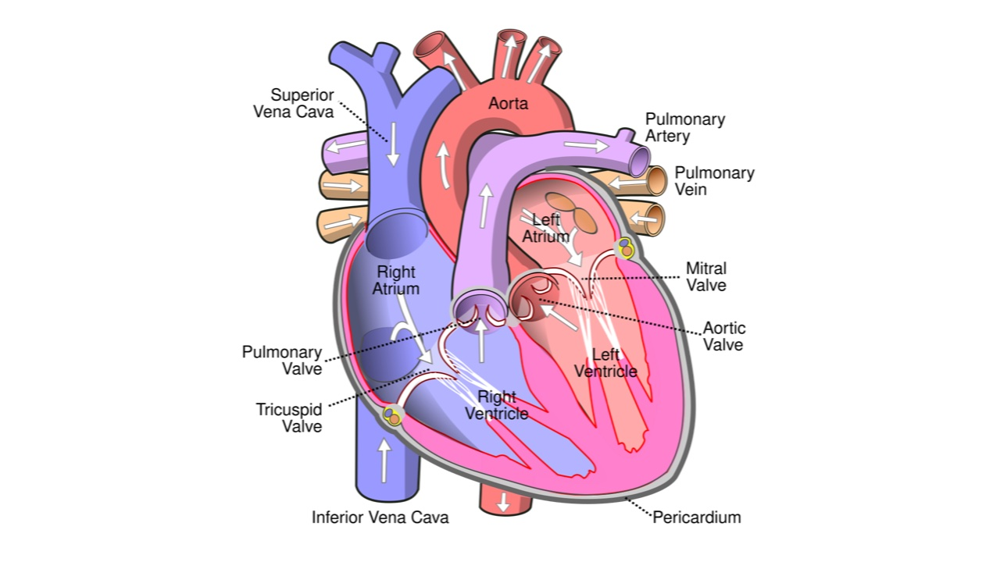

Heart
The heart is a muscular organ that pumps blood through the blood vessels of the circulatory system. The pumped blood carries oxygen and nutrients to the body, while carrying metabolic waste such as carbon dioxide to the lungs.
In humans, the heart is approximately the size of a closed fist and is located between the lungs, in the middle compartment of the chest. It has four chambers: upper left and right atria and lower left and right ventricles.
Valves stop blood flowing backwards. The tricuspid and mitral valves sit between the atria and the ventricles, and the pulmonary and aortic valves sit at the exits of the ventricles.
The heart beats at a resting rate close to 72 beats per minute, driven by the sinoatrial node, its natural pacemaker.
